图源：网络
又一位印度女网红来中国作妖，跟前面那位印度网红JO几乎是前后脚，不过这位玩得比较“高端”，不像JO一样只表现得那么“无礼”。
对于她在中国的行为，甚至有网友洗白，就知道是有多“高端”了吧。
我帮大家逐帧分析下这位网红的“是非曲直”。
这位印度女网红，名叫Garima，刚结束5天的老挝之旅，5月31日从老挝琅勃拉邦站坐动车一路北上入境中国昆明。
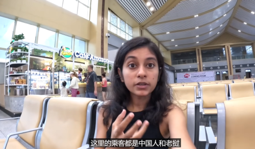
图源：“张勇Aaron”微信公众号
刚进站时她表示这里还不错。在候车大厅里拍了琅勃拉邦站候车厅，给人一种一切都显得干净、整洁、有序的样子。
图源：“张勇Aaron”微信公众号
等到她在站台登车时，又说老挝不太发达，其他我不知道，但是这个站比较印度火车开挂怎么样呢？
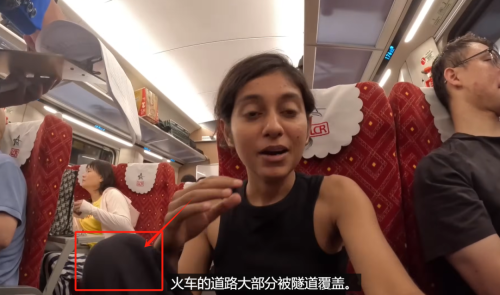
图源：“张勇Aaron”微信公众号
注意看，他们是不是有这方面传统？
我依稀记得前段时间抖音上有人曝光说，印度人在中国高铁上蹬座椅。
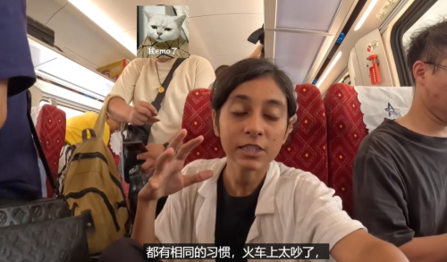
图源：“张勇Aaron”微信公众号
接下来，在老挝境内最后一站有旅客刚上车，人们正在找座位找行李架，她表示，中国和印度是兄弟，习惯一样——很吵。
真的吗？
Garima到了昆明之后，遇到一个同样来旅游的印度人。
对于中国他们都有相同的感触——非常安全。
图源：“张勇Aaron”微信公众号
Garima把笔记本电脑忘在了电动车上，然后坐出租就走了，过了30分钟也没有人偷。她说，中国比迪拜还安全。
这是Garim的第一期视频。在后续的几期视频里，她去了丽江、成都、重庆等地，也没有发生什么过分的事情。
看着一个弱不禁风的女子孤身一人跨境旅游，前面发生的这些小事情，似乎很正常。
然而，这才是开始。给你一颗糖让你放松警惕，再给你一巴掌。
没错，她的“嘴脸”在第12个视频里便藏不住了。
这是她的标题：
图源：“张勇Aaron”微信公众号
中国官员禁止我进入武汉肉类市场，我被中国安全部门跟踪。
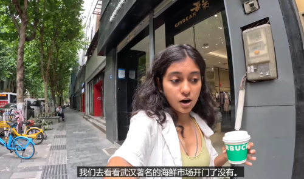
图源：“张勇Aaron”微信公众号
Garima到了武汉之后，有非常明确的目标。
“武汉一座小城，在口罩期间非常出名，我要去看看海鲜市场。”
“如果开着门，就去看看，如果被关闭了，就无能为力了。”
“忘了戴口罩，还没有做好准备接受这些气味。”
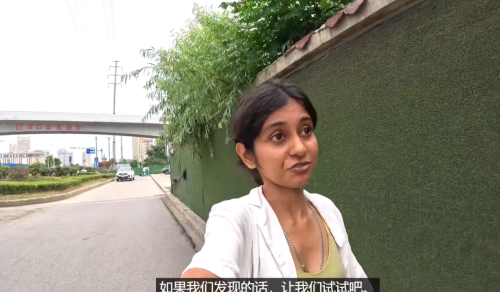
图源：“张勇Aaron”微信公众号
没错，她要去武汉肉类市场。她一路上的表情，看似很期待、很兴奋，似乎那里才是此行必去的地方。
图源：“张勇Aaron”微信公众号
走了很远的路，到了市场这个巷口。
这时一个市场执勤人员看到她举着相机，回头看了一眼。紧接着执勤人员立马掉头跟了上来。
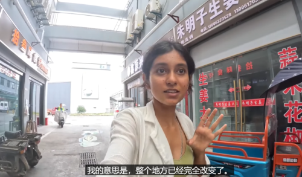
图源：“张勇Aaron”微信公众号
Garima面对执勤人员的询问，说自己不会中文，就从这里掉头出来了。
接下来，她绕到肉类区域，执勤人员不允许拍摄，她又被请了出来。
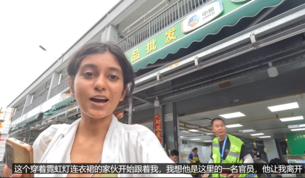
图源：“张勇Aaron”微信公众号
出来之后又遇到另外一位执勤人员，执勤人员再次告诉她不能拍摄，Garima又说她不会中文。
图源：“张勇Aaron”微信公众号
反正就这这样装疯卖傻。
在这离开后，她转头就冲进了市场的一个肉类加工间拍摄，不管有没有允许。
图源：“张勇Aaron”微信公众号
这时开头那位执勤人员跟进来，你不是不会说中文，我给你翻译过来应该能看懂了吧？
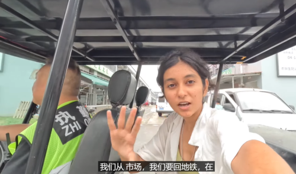
图源：“张勇Aaron”微信公众号
你不听，那只能亲自把你送出去。
就这样，她被送了出来。
Garima在这里没有找到蛇鼠蝙蝠，但她认为一定是藏在引擎盖里，在隐蔽的地方。她说中国隐藏了市场，她很震惊。
看到这里，我发现，这小可爱哪儿是来旅游，这分明是来找事。
还记得这对儿英国博主“酒仙夫妇”吗？在印度一个百货市场里拍摄，差点儿被后面这位追上胖揍一顿。
图源：“张勇Aaron”微信公众号
不是哪里都能拍摄，不是哪里都可以进，在武汉已经让你很体面了，还有专车送你到地铁，知足吧。
接下来，在第十三期视频中继续作妖行动。标题是中国人还在吃狗肉吗？
图源：“张勇Aaron”微信公众号
Garima心有不甘，没有在武汉找到自己的“目标”，而且语言又不通，就去惠州找到了一位曾在伊朗认识的朋友，是一位会英语的中国女士Vicky。
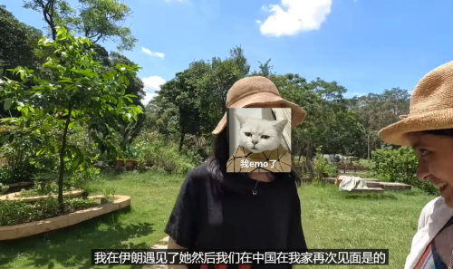
图源：“张勇Aaron”微信公众号
他们特意去了S狗吃肉的地方，Vicky说有大概30%的人还在吃狗肉。
啊，这么多吗？
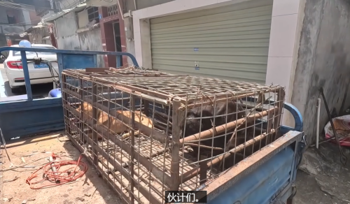
图源：“张勇Aaron”微信公众号
不知道这位女士什么想法，一个在外面认识的朋友，来自己家里做这种“纪录片”，你好生招待，她却被刺你，有没有想过“交友需谨慎”？
第十四期的视频内容还是作妖。
图源：“张勇Aaron”微信公众号
标题中Garima将中国与澳门特别行政区当作同等级别。
网友的纠正简直满分。
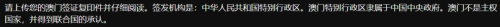
图源：“张勇Aaron”微信公众号
请上传您的澳门签证复印件并仔细阅读。签发机构是：中华人民共和国特别行政区。澳门特别行政区隶属于中国中央政府，澳门不是主权国家，并得到联合国的承认。
Garima在中国大陆待了27天，完成了旅行计划，最后要从深圳坐轮渡去澳门。
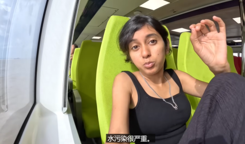
图源：“张勇Aaron”微信公众号
在去澳门的渡轮上，Garima说这里的水污染很严重，不干净。
网友同样给了专业的答复。
图源：“张勇Aaron”微信公众号
网友：澳门附近海水浑浊，并非污染所致，而是由于地转偏向力，给珠江西岸带来了较多的泥沙。
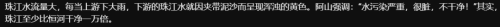
图源：“张勇Aaron”微信公众号
网友：珠江水流量大，每当上游下大雨，下游的珠江水就因夹带泥沙而呈现浑浊的黄色。其实珠江至少比恒河干净一万倍。
其实视频里还有很多，例如坐车副驾不系安全带，随意摸人家食品等等，跟JO无异。
最近看到了很多博主也在讨伐这类来中国旅游夹带私货的印度博主。
其实这类博主的行为不算个例，这是他们的任务。
在今年2月份，印度政府官员曾说，一些夸中国的印度网红危害他们国家安全，并要采取行动。
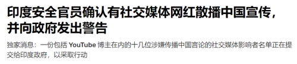
图源：“张勇Aaron”微信公众号
因此有印度网红表示瑟瑟发抖，因为他的一半视频都是在比较中国和印度的基建，例如高楼、铁路、大桥等等。
这样的话就容易理解，一个接一个有影响力的印度网红为什么会在中国做出各种虚假的操作。
您怎么看？评论区留下您的看法。